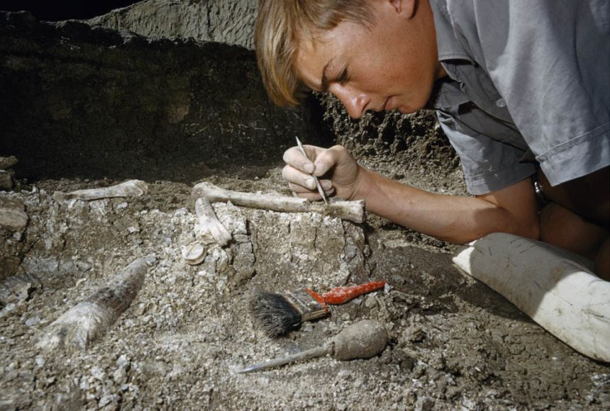
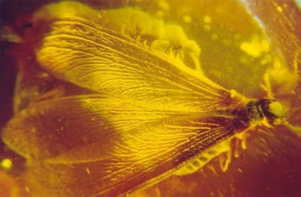
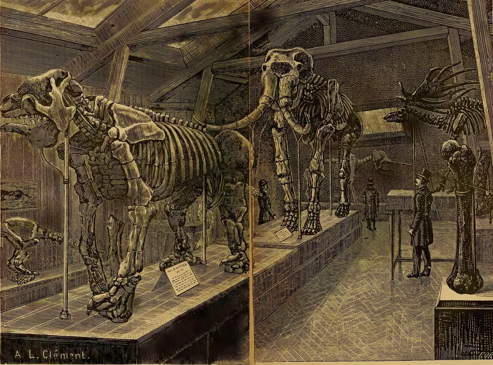

Take a journey back into the past and take a glimpse of what life was like millions of years ago.

What is Paleontology?
Paleontology refers to the study of ancient life, from dinosaurs to prehistoric plants, mammals, fish, insects, fungi, and even microbes. Fossil evidence reveals how organisms changed over time and what our planet was like long ago.
Scientists and researchers that study Paleontology are called paleontologists, and they use fossil remains to understand different aspects of extinct and living organisms.
Individual fossils may contain information about an organism’s life and environment. Much like the rings of a tree, for example, each ring on the surface of an oyster shell denotes one year of its life. Studying oyster fossils can help paleontologists discover how long the oyster lived, and in what conditions.
If the climate was favorable for the oyster, the oyster probably grew more quickly and the rings would be thicker. If the oyster struggled for survival, the rings would be thinner. Thinner rings would indicate an environment not favorable to organisms like the oyster—too warm or too cold for the oyster, for example, or lacking nutrients necessary for them to grow.
What other things can fossils tell us?

Some fossils show how an organism lived. Amber, for instance, is hardened, fossilized tree resin. At times, the sticky resin has dripped down a tree trunk, trapping air bubbles, as well as small insects and some organisms as large as frogs and lizards. Paleontologists study amber, called “fossil resin,” to observe these complete specimens. Amber can preserve tissue as delicate as dragonfly wings. Some ants were trapped in amber while eating leaves, allowing scientists to know exactly what they ate, and how they ate it. Even the air bubbles trapped in amber are valuable to paleontologists. By analyzing the chemistry of the air, scientists can tell if there was a volcanic eruption or other atmospheric changes nearby.
The behavior of organisms can also be deduced from fossil evidence. Paleontologists suggest that hadrosaurs, duck-billed dinosaurs, lived in large herds, for instance. They made this hypothesis after observing evidence of social behavior,including a single site with approximately 10,000 skeletons.
Fossils can also provide evidence of the evolutionary history of organisms. Paleontologists infer that whales evolved from land-dwelling animals, for instance. Fossils of extinct animals closely related to whales have front limbs like paddles, similar to front legs. They even have tiny back limbs. Although the front limbs of these fossil animals are in some ways similar to legs, in other ways they also show strong similarities to the fins of modern whales.
History of Paleontology

Throughout human history, fossils have been used, studied, and understood in different ways. Early civilizations used fossils for decorative or religious purposes, but did not always understand where they came from.
Although some ancient Greek and Roman scientists recognized that fossils were the remains of life forms, many early scholars believed fossils were evidence of mythological creatures such as dragons. From the Middle Ages until the early 1700s, fossils were widely regarded as works of the devil or of a higher power. Many people believed the remains had special curative or destructive powers. Many scholars also believed that fossils were remains left by Noah's flood and other disasters documented in the Hebrew holy book.
Some ancient scientists did understand what fossils were, and were able to formulate complex hypotheses based on fossil evidence. Greek biologist Xenophanes discovered seashells on land, and deduced that the land was once a seafloor. Remarkably, Chinese scientist Shen Kuo was able to use fossilized bamboo to form a theory of climate change.
The formal science of paleontology—fossil collection and description—began in the 1700s, a period of time known as the Age of Enlightenment. Scientists began to describe and map rock formations and classify fossils. Geologists discovered that rock layers were the product of long periods of sediment buildup, rather than the result of single events or catastrophes. In the early 1800s, Georges Cuvier and William Smith, considered the pioneers of paleontology, found that rock layers in different areas could be compared and matched on the basis of their fossils.
Later that century, the works of Charles Lyell and Charles Darwin strongly influenced how society understood the history of Earth and its organisms. Lyell’s Principles of Geology stated that the fossils in one rock layer were similar, but fossils in other rock layers were different. This sequence could be used to show relationships between similar rock layers separated by great distances. Fossils discovered in South America may have more in common with fossils from Africa than fossils from different rock layers nearby.
Darwin’s On The Origin of Species observed somewhat similar sequencing in the living world. Darwin suggested that new species evolve over time. New fossil discoveries supported Darwin’s theory that creatures living in the distant past were different from, yet sometimes interconnected with, those living today. This theory allowed paleontologists to study living organisms for clues to understanding fossil evidence. The Archaeopteryx, for example, had wings like a bird, but had other features (such as teeth) typical of a type of dinosaur called a theropod. Now regarded as a very early bird, Archaeopteryx retains more similarities to theropods than does any modern bird. Studying the physical features of Archaeopteryx is an example of how paleontologists and other scientists establish a sequence, or ordering, of when one species evolved relative to another.
The dating of rock layers and fossils was revolutionized after the discovery of radioactivity in the late 1800s. Using a process known as radiometric dating, scientists can determine the age of a rock layer by examining how certain atoms in the rock have changed since the rock formed. As atoms change, they emit different levels of radioactivity. Changes in radioactivity are standard and can be accurately measured in units of time.
By measuring radioactive material in an ancient sample and comparing it to a current sample, scientists can calculate how much time has passed. Radiometric dating allows ages to be assigned to rock layers, which can then be used to determine the ages of fossils.
Paleontologists used radiometric dating to study the fossilized eggshells of Genyornis, an extinct bird from Australia. They discovered that Genyornis became extinct between 40,000 and 50,000 years ago. Fossil evidence from plants and other organisms in the region shows that there was abundant food for the large, flightless bird at the time of its extinction. Climate changes were too slow to explain the relatively quick extinction.